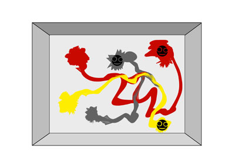
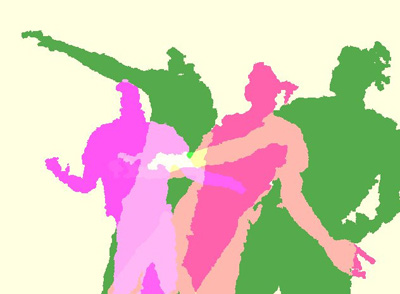

KAMERAS ÜBERSETZEN BEWEGUNG
IN FORMEN UND FARBEN
INSTALLATIONEN
Eröffnung Do 14. 07. 2011
Ausstellung 14. 07. – 16. 07. 2011
jeweils 17 – 20 h
Aula Stiftstraße
Stiftstraße 69
Mit Tillman Engel, Dodo Voelkel, Christoph Gebhardt, Hannes Finck, Fabian Greve, Kolja Warnecke, Philipp Kessling, Grigory Mikhaylov, Viktor Kolbaja, Andrej Filatov, Melissa Wuttke, Nicole Kiersz, Wiebke Klare, André Schmidt, Tim Jentz, Nadja Niemann, Pascal Melcer, Felix Riedel, Christian Hüning und Jason Wilmans.
Ein Kooperationsprojekt der Departments Design und Informatik;
betreut von Prof. Franziska Hübler, Prof. Gunter Klemke,
Prof. Kai von Luck und Prof. Birgit Wendholt.
von Pascal Melcer, Felix Riedel, Jason Wilmans, Christian Hüning, Malte Eckhoff
Interaktiver Raum zur gestischen Malerei
Die interaktive Installation INKSPHERE ist in Anlehnung an den Malstil des Action-Painting-Künslters Robert Motherwell enstanden. Der Malstil Motherwells wird mit der drehenden Leinwand von Alfons Schilling vereint. Anders als Schilling in den 60er Jahren sind wir heute in der Lage die Grundidee der Geste in die dritte Dimension zu übertragen. Die runde Leinwand wird zur einer von innen betrachteten Kugelform. Als Malwerkzeug genügt heute wie auch früher die bloße Hand. So wird der Akteur auf spielerische Art inspiriert seinen eigenen Gestus zu erforschen und zusammen mit anderen in einer gemeinsamen Sphere zu gestalten.
Einfluss & Recherche
1/ Robert Motherwell war in den 60er Jahren einer der wichtigsten Vertreter des amerikanischen Abstrakten Expressionismus. Seine großformatigen Malereien sind durch dominante schwarze Gesten geprägt.
2/ Alfons Schilling ist ein Künstler, ein früher Vertreter des Action Painting und ein Wegbereiter des Wiener Aktionismus. Er entwickelt 1962 seine Idee des Bewegungs-Bildes weiter, indem er auf rotierenden runden Flächen von über 2 m Durchmesser malt.
Konzeption
Um einen räumlichen Eindruck zu erzeugen, werden die Akteure in die Lage versetzt, durch Gesten der rechten Hand eine Kugel von innen mit «Tusche » zu bemalen.
Das gemeinschaftliche Gestalten der Leinwand wird durch das duale Steuern der Drehbewegung betont, indem ein Mittelwert der Positionen der Akteure errechnet wird.
von Kolja Warnecke, Philipp Kessling, Grigory Mikhaylov, Viktor Kolbaja, Andrej Filatov
Ideenfindung
Inspiriert durch Gerhard Hoehme und durch Jason Pollok wollen wir menschliche Bewegungen auf der Leinwand zeigen. Dabei nehmen wir die skulpturartigen, in der Wirkung fast graphischen, Elemente von Hoehme auf und kombinieren diese mit der Spontanität und großflächigen Arbeitsweise von Jason Pollock.
Aktion und Reaktion
Der menschliche Körper wird über einen Kinect-Sensor erfasst und auf der Leinwand als eine Abstraktion seines “Adernetzes” dargestellt. Der Spieler kann sich dabei frei auf der Spielfläche bewegen und mit seinen Bewegungen Spuren ziehen. Die Hände dienen dabei als “Pinsel” mit denen der Akteur im Raum dreidimensional Malen kann. Mit drehen der Schulter kann der Akteur die Kamera drehen und so sein Werk aus allen Perspektiven betrachten. Bewegt sich der Akteur schnell durch den Raum wird der Pulsschlag des Modells erhöht, das Herz schlägt schneller und die Farbe des Adernetzes verändert sich. Durch Sphärische Klänge, die der Akteur durch bestimmt Bewegungen steuern kann entsteht ein innerer Drang sich zu bewegen und tänzerisch zu Malen, wodurch besonders interessante Werke entstehen können.
Realisierung
Mit dem Programm Unity 3D und einer Kinect Kamera wurde ein Programm erarbeitet, dass den Menschen im Raum erkennt und anhand von Punkten sein Skelett nachbildet. An die beiden Punkte an den Händen wurden lediglich zwei Partikelsysteme angefügt und modifiziert.
SPUREN
von Tillman Engel, Dodo Voelkel, Christoph Gebhardt, Hannes Finck, Fabian Greve
Inspiriert durch eine Videoarbeit des zeitgenössischen
Videokünstlers George Barbers entstand die interaktive
Installation Spuren. George Barber verteilte auf einer Straße
Farbe und machte so die Autofahrer zu unfreiwilligen
Akteuren seines Projekts. Beim Hindurchfahren entstanden
Spuren, die sich im Laufe der Aktion vermischten und so
zu zufälligen Mustern führten.
Konzept:
Interessant für uns war die Tatsache, dass der Körper
selber als ganzes den Pinsel bildet, und so durch seine
Bewegung den Strich führt. Zusätzlich denken wir das
durch das Projezieren von oben und so das Verlegen der
Malfläche auf den Boden zur einer unbewussten Teilnahme
der Ausstellungbesucher führen wird.
Sobald eine Person durch den Kinect-Sensor erfasst wird,
wird ihr eine Farbe zugeordnet. Es bildet sich sogleich
eine Farbelache unter ihr die durch Bewegung über die
Projektionsfläche verteilt werden kann.
Skizzen:

Body Stamp
von Tim Jentz, André Schmidt, Nadja Niemann, Melissa Wuttke, Wiebke Klare, Nicole Kiersz
Design Aspekte
Leitidee für das Projekt „Body Stamp“ ist der Künstler Yves Klein. Seine Anthropometrien aus dem Jahr 1955/57 sollen in unserem Projekt mit einem digitale Medium zitiert werden. Yves Klein benutzte bei seinen Anthropometrien Aktmodelle, die er mit blauer Farbe bemalte und anschließend auf Leinwände drückte. Was zurück gebliegen ist, waren Körperabdrücke in leicht abstrahierter Form.
Abb.1
Abb.2
Abb.1: Yves Klein: Anthropometrie, ohne Titel, 200 x 500 cm, 1960. Pigment in Kunstharz auf Leinwand.
Abb.2: Yves Klein: Anthropometrie – Vorführung, Paris, 9. Mär 1960. Fotografie. Performance
Für das Zitieren der Anthropometrie dient uns ein Beamer, eine Leinwand, die Kinect- Kamera und vor allem die Besucher.
Mit Hilfe der Kinect-Kamera sollen abstrakte Formspiele auf der Projektion entstehen. Der Besucher ist aufgefordert sich vor der Kinect- Kamera zu bewegen. Auf der Leinwand soll seine Köpersilhouette zu sehen sein, die eine zufällig aus der Bibliothek gewählte Farbe haben soll. So darf der Besucher sich vor der Leinwand frei bewegen und nach einer zufälligen Zeit wird seine Bewegung eingefroren und erscheint auf der Leinwand. Das Ziel ist, dass die Besucher sich auf der Leinwand verewigen können und gleichzeitig aktiv an der Gestaltung einer Collage mitwirken.
Abb. 3

Abb. 4
Abb. 3 zeigt einen digitalen Entwurf, wie so eine Projektion aussehen könnte.
Abb. 4 dagegen zeigt eine Skizze, die mit der Kinect- Kamera entstand.
Für die Designstudenten liegt, wie schon erwähnt, die Herausforderung in der Farbgestaltung. Im Gegensatz zu Yves Klein, der sich auf eine Farbe beschränkt hat, liegt es in unserem Ziel mit Farbe eine ästhetisch anspruchsvolle Stimmung zu erzeugen. Dazu müssten Farbcollagen erarbeitet werden, die dann eine Basis für die Farbgestaltung bilden. Auch war die Überlegung seitens der Designer, ob es seitens der Technik möglich wäre die Körpersilhoutten zusätzlich neben der Farbe mit Texturen zu füllen.
Farbcollagen als Möglichkeiten:
Die Texturen ergeben sich aus Fotografien von organischen Formen, die einen harmonischen Gesamteindruck vermitteln sollen.
Die Farbe der Körpersilhouetten soll zusätzlich veränderbar sein. Dazu eignet sich die Eigenschaft der Kinect- Kamera den Raum dreidimensional erfassen zu können. Je näher der Besucher vor der Leinwand steht desto deckender erscheint die Silhouette, je weiter er von der Leinwand entfernt ist, desto transparenter erscheint sie. Die Idee ist, der Farbe Transparenz zu geben, die als gestaltendes Element dienen soll und die Überlagerungen der eingefrorenen Köpersilhouetten sichtbar macht. Zusätzlich ergeben sich durch die Überlagerungen neue ( abstrakte) Formen.
Technische Umsetzung
Als Hardwarekomponente wurde die Microsoft Kinect verwendet. Diese nutzt, zusätzlich zur normalen Kamera, noch ein Infrarotstrahler um entfernungen zu messen. Dabei die Zeit gemessen, die das von Objekten reflektierte Licht braucht um an Hand der daraus resultierenden Punktwolke eine Tiefenkarte zu erstellen. Diese Zusatzinformationen, gekoppelt mit dem Kamerabild, ermöglichen eine schnelle und sichere Erkennung von Personen und Ihrem Aufenthaltsort im dreidimensionalen Raum.
Um die Kinect an einem PC zu nutzbar zu machen, wurden die Primesense-Treiber auf einem PC mit einem zweiundreißig Bit Windows-7 Betriebssystem installiert.
Als Programmiersprache diente C# und als Programmierumgebung wurde Visual Studio 2010 von Microsoft genutzt. Um die Kinect anzusprechen wurde der C# Wrapper der OpenNI-Bibliothek verwendet.
Die vorgefertigten Texturen, die für die Silhouetten verwendet wurden, werden als png Dateien hinerlegt und auf Bit-Ebene mit den Bilddateien, die die Kamera lieferte.
Cy M Y K
von Anne Stiefel, Florian Maas, Simon Alt, Eugen Gez, Christina Steinke
Inspiration und Konzeption
Der US- Maler, Fotograf und große Vertreter des Abstrakten Expressionismus Cy Twomby inspirierte uns zu einer Arbeit, die die Besucher dazu animiert, aktiv ein expressionistisches Werk zu gestalten. Cy Twomblys – eigentlich Edwin Parker Twombly – Malereien sind ausdrucksstark und kräftig und häufig verbunden mit Schriftzügen oder Kritzeleien, die an Schrift auf Schultafeln oder Graffiti erinnern.
Er zählt neben Franz Kline, Helen Frankenthaler, Willem de Kooning und Jackson Pollock zu den bekanntesten Vertretern des amerikanischen Abstrakten Expressionismus und ist noch heute aktiv, allerdings ist er sehr medienscheu und lebt zurückgezogen in Italien.
Wir verbinden diese Aktionsmalerei mit dem Element des Windes, um das Gestalten auf der Leinwand in den Aktionsraum einzubeziehen; während der Akteur die Farben und Formen auf der Leinwand bewegt, bläst tatsächlicher Wind im Raum und bewegt die Leinwand, auf der die Projektion zu sehen ist. Das „Gemalte“ wird dann parallel digital aus dem Bild geweht und es entsteht ein irritierendes Zusammenspiel von reellen physischen Bewegungen+ spürbarem Wind und der digitalen Bewegung.
Der Besucher kann malen, wenn er von der Kinekt- Kamera erfasst worden ist. Dazu stellt man sich (eine Person maximal) gerade vor die Kamera und hebt beide Arme über den Kopf, die Arme sind dabei leicht gebeugt. Wenn die Farbekleckse sich simultan zum eigenen Körper bewegen, wurde die jeweilige Person erfasst und kann nun nach Lust und Laune malen! Viel Spaß dabei!
Computationalspaces steht unter der Leitung von Prof. Dr. Birgit Wendholt und Prof. Franziska Hübler von der Hochschule für Angewandte Wissenschaften in Hamburg. Alle Rechte vorbehalten. Vervielfältigung nur mit Genehmigung. Layout/Inhaltsgestaltung: Marissa Kimmel und Programmierung/Inhaltsgestaltung: Adriane Künne.